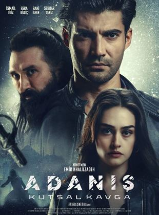

Adanış: Kutsal Kavga, İstanbul'un fethinden sonra bir yarısı soylu Julius Ailesi’nde diğer yarısı ise Adanmışlar'da olan kutsal haritanın odağında olan olayları konu ediyor. "Adanmışlar", İstanbul’u fethinin ardından Türklerin eline geçen önemli bir sırrı korumak için teşkilatlanmış olan bir gruptur. Sırrı korumak için her şeyi göze alan "Adanmışlar, sırrı ele geçirmek için çabalayan karanlık güçlere karşı zorlu bir mücadeleye girişir.
